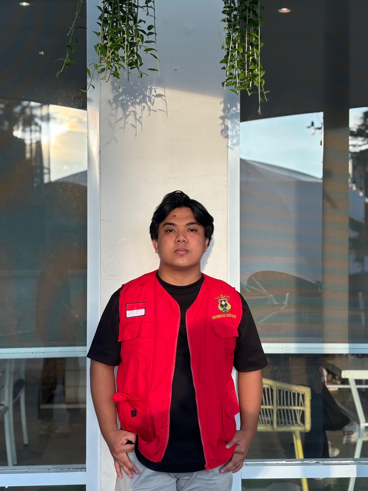
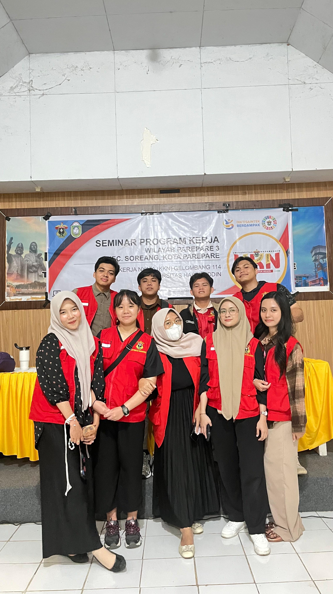

Bukit Harapan
Kota Parepare
Kota Parepare
Website profil Kelurahan Bukit Harapan ini dibuat oleh mahasiswa KKN Kelurahan Bukit Harapan Universitas Hasanuddin guna memenuhi program kerja pembuatan website profil dan informasi Kelurahan Bukit Harapan. Terima kasih kepada Lurah, aparat kelurahan, dan masyarakat setempat yang juga ikut berpartisipasi dalam pengerjaan website ini.
Mahasiswa KKN Gel. 114 Universitas Hasanuddin yang ditempatkan di Kelurahan Bukit Harapan merupakan penanggung jawab dalam pembuatan website ini. Posko KKN ini diketuai oleh Fitra Ramadhani dan beranggotakan 9 orang yang berasal dari beberapa jurusan berbeda dari Universitas Hasanuddin. Posko ini menaruh harapan semoga kehadirannya mampu memberikan dampak positif bagi kelurahan ini dan masyarakat sekitar dengan mengadakan program kerja yang sesuai dengan kondisi Bukit Harapan saat ini.
Di antara program kerja yang disusun oleh peserta KKN di kelurahan ini, salah satunya yaitu pembuatan website profil dan informasi Kelurahan Bukit Harapan. Semakin berkembangnya inovasi di bidang teknologi menuntut kita untuk bisa beradaptasi dengan hal tersebut. Tujuannya tentu untuk mempermudah segala akses kerja yang akan dilakukan.
Tujuan disusunnya program kerja “Pembuatan Website Profil dan Informasi Kelurahan Bukit Harapan” ini adalah agar bisa menjadi wadah bagi seluruh masyarakat untuk mengakses informasi mengenai Kelurahan Bukit Harapan dengan mudah. Selain itu, website ini nantinya akan menghadirkan informasi mengenai Kelurahan Bukit Harapan sehingga diharapkan mampu menarik perhatian masyarakat umum, membuat Kelurahan Bukit Harapan lebih dikenal, dan tentunya lebih maju.

MUHAMMAD RAFLI DAHLAN

Mahasiswa KKN Gel. 114 Unhas Kelurahan Bukit Harapan

Logo Posko KKN Unhas kelurahan Bukit Harapan